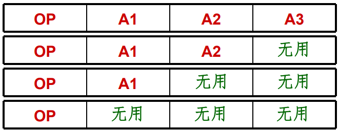
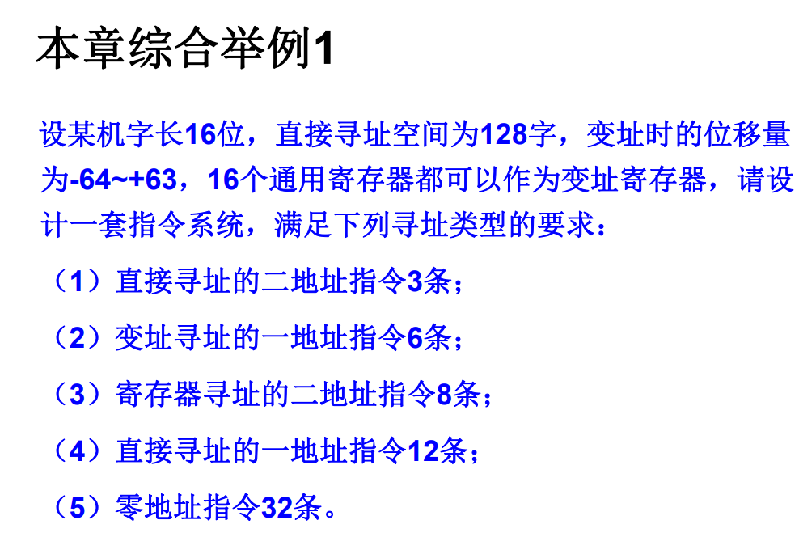
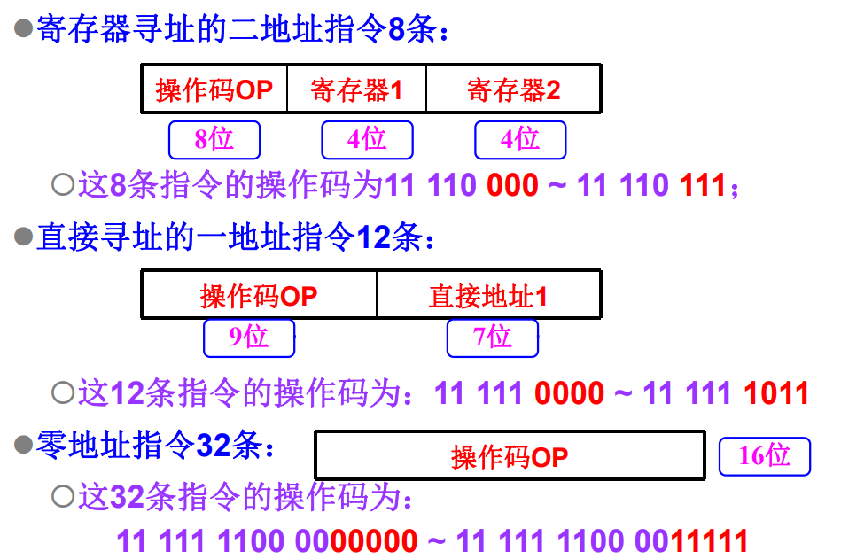
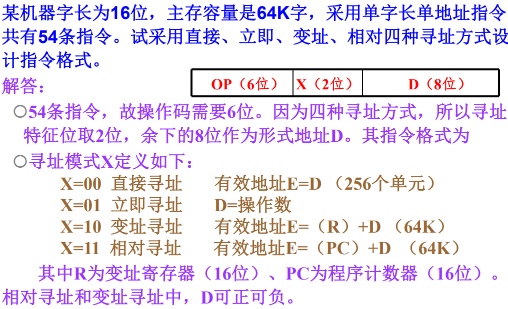

指令系统
指令系统的发展与性能要求
指令系统的发展
程序：用于解决实际问题的一系列的指令。
指令：使计算机执行某种操作的命令。
从组成的层次结构来说，计算机中的指令可以分为以下几类：
-
微指令：微程序级的命令，属于硬件层级
-
机器指令：简称指令。可完成一个独立的算术或者逻辑指令
-
宏指令：由若干条机器指令组成的软件指令，属于软件
指令系统：一台计算机中所有机器指令的集合。直接影响机器的硬件结构、软件结构以及机器的使用范围。
计算机指令系统的发展过程
-
50年代：
只有定点加减、逻辑运算、数据传送、转移等几十条指令
-
60年代后期：
增加了乘除指令，浮点运算、十进制运算，字符串处理等指令，指令数量大大增加，寻址方式也趋向于多样化。
出现了系列计算机。
系列计算机简介：
基本指令系统、基本系统结构相同的一系列计算机，但是具体的器件、结构和性能不会完全相同。一般来说，新的机种在各种方面优于原来的机种
一个系统往往有多种型号，但是都是向后兼容的。
-
70年代中期：
复杂指令系统计算机
CISC采用复杂的指令系统，来达到增强计算机的功能，提高机器速度的目的。
精简指令系统计算机
RISC从简化指令系统和优化硬件设计的角度来提高系统的性能与速度。
指令系统性能的要求
指令系统的性能决定了计算机的基本功能，关系到计算机的硬件结构和用户的需求。
完善的指令系统应该满足以下的要求：
-
完备性：常用指令齐全，编程方便
-
有效性：程序占用内存少，运行速度快
-
规整性：指令和数据的使用规则统一，易学易记
规整性包括对称性，匀齐性，指令格式和数据格式的一致性。
-
对称性：所有指令都可以使用各种寻址方式
-
匀齐性：一种操作性质的指令可以支持各种数据类型
-
指令格式和数据格式的一致性：指令长度和数据长度有一定的关系
-
-
兼容性：同一系列的计算机均可以运行编写的程序
低级语言与硬件结构的关系
低级语言：面向机器的语言，和具体机器的指令系统密切相关。
| 比较内容 | 高级语言 | 低级语言 | |
|---|---|---|---|
| 1 | 通用算法 | 有 | 有 |
| 2 | 语言规则 | 较少 | 较多 |
| 3 | 硬件知识 | 不要 | 要 |
| 4 | 对机器独立的程度 | 独立 | 不独立 |
| 5 | 编制程序的难易程度 | 易 | 难 |
| 6 | 编制程序所需的时间 | 短 | 较长 |
| 7 | 程序执行时间 | 较长 | 短 |
| 8 | 编译过程中对计算机资源的要求 | 多 | 少 |
指令格式
指令的一般格式
指令字：表示一条指令的机器字
指令格式：用二进制代码表示的指令字结构形式，由操作码字段和地址码字段组成。
操作码：表征指令的操作特性与功能
地址码字段：通常指令参与操作的操作数的地址
操作码
操作码字段的位数取决与指令系统的规模。
操作码可以分成两种类型：
-
固定长度的操作码：
所有指令的长度均相同。
控制简单，速度快，适用于指令条数不多的场合。
-
可变长度的操作码：
频繁使用的指令用位数较少的操作码。
不常使用的指令可利用操作码扩展技术进行扩展。
充分利用软硬件资源，适用于大规模的指令系统。
地址码
一条指令格式中有几个地址码字段，就称为是几地址指令。
-
零地址指令
没有任何操作数运算，比如
NOP。单操作数运算，隐含了一个操作数，比如
CBW。 -
一地址指令

单操作数运算:
OP(A1)-> A1双操作数运算，但是隐含了一个操作数
-
两地址指令
(A1) OP (A2)->A1 -
三地址指令
(A1)OP(A2)->A3 -
多地址指令
这类指令功能比较强，一般用于中大型机，用于实现批数据处理，字符串处理或者向量和矩阵运算。
两地址指令的分类
一般根据操作数的物理位置分。
-
存储器——存储器
-
寄存器——寄存器
-
寄存器——存储器
指令的操作码扩展技术
在指令系统中，如果操作码的长度固定但是指令格式不同，那么对于地址码较少的指令就存在编码浪费。

因此就诞生了操作码扩展技术：
- 对于不需要某个地址码的指令，将它们的操作码扩充到地址字段
操作码扩展技术即充分利用指令字的各字段，又在不增加指令长度的情况下扩展操作码的长度。

指令字长度
机器字长：运算器一次能处理的二进制数的位数。
机器指令的长度直接决定着CPU运算的精度和直接寻址的能力。
指令字长：一个指令字中包含二进制代码的位数。指令字长由操作码长度、操作数个数和个数共同决定。
指令含有半字长、单字长、双字长、多字长等不同的长度类型。
指令系统可以分为等长指令字结构、变长指令字结构。
指令助记符
使用3~4个英文缩写字母来表示的指令操作码。
在不同的计算机中指令助记符的规定是不一样的。
操作数类型
机器指令对数据进行操作，数据通常分为以下四类：
-
地址数据：无符号整数，通过某种运算确定操作数在主存中的有效地址
-
数值数据：定点整数，小数，浮点数
-
字符数据：文本数据或者字符串
-
逻辑数据：由若干二进制位组成
指令和数据的寻址方式
指令的寻址方式
-
顺寻寻址方式
当程序按顺序执行时的指令寻址方式。
需要用程序计数器
PC记录所要执行指令的存放单元地址。-
一般做顺序加1的操作，这里的“加1”表示加上指令的长度。
-
程序计数器又称做指令指针寄存器。
-
-
跳跃寻址方式
当程序转移控制执行时的指令寻址方式。
程序计数器的内容由本条指令提供，而不是顺序改变。
操作数的寻址方式
一种单地址码指令的结构如图所示：

将指令中的形式地址变换为操作数有效地址的过程就是寻址过程。
隐含寻址
操作数地址隐含在操作码中。在指令字中减少了一个地址字段，可以缩短指令字长。
立即寻址
形式地址就是操作数。
指令执行阶段不需要访存，速度快，但是形式地址字段的位数限制了立即数的范围。
直接寻址
有效地址由形式地址字段直接给出。
在执行结构需要访问一次存储器，形式地址的位数决定了指令操作数的寻址范围，而且操作数的地址不易修改。
间接寻址
有效地址由形式地址字段简介提供。
可以扩大寻址的范围。寻址时，可以根据需要进行多次间接寻址，存在一个寻址特制字段区分直接寻址和间接寻址。
寄存器寻址
形式地址字段为寄存器的编号。
在执行阶段不需要访存，只访问寄存器，执行速度较快。寄存器的个数有限，可以缩短指令的字长。
寄存器间接寻址
形式地址字段用于指出存放有效地址的寄存器编号。
在执行阶段需要访问内存，便于编写循环的程序。
偏移寻址
常用的偏移寻址：
-
相对寻址：指令转移发生的时候常用。
Address=A+(PC) -
基址寻址：
Address=(R)+A，其中A每次加1 -
变址寻址：
Address=A+(R)，其中R每次加1
典型指令
老师说讲题更重要，所以没讲。
本章练习题
设计指令系统

按照操作码的长度分别设计。


计算程序计数器的值
计算本身简单，但是需要考虑指令的长度。

计算不同操作数指令的最大数量

不同寻址方式设计指令格式
